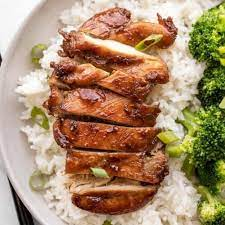

Air Fryer Teriyaki Chicken

Easy Teriyaki Chicken Recipe
A quick and easy lunch or dinner! This teriyaki chicken is perfect for meal planning and goes great with fried rice and broccoli.
- teriyaki sauce
- chicken breast or tenders
- salt and pepper
- Cut thawed chicken in 2 inch cubes
- Add chicken to teriyaki sauce, salt, and pepper and marinate for 3 hours
- Set air fryer to 350 degrees and cook chicken for 5 minutes on each side